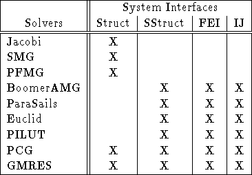

There are several solvers available in HYPRE via different conceptual interfaces (see Table 7.1). The procedure for setup and use of solvers and preconditioners is largely the same. We will refer to them both as solvers in the sequel except when noted. In normal usage, the preconditioner is chosen and constructed before the solver, and then handed to the solver as part of the solver's setup. In the following, we assume the most common usage pattern in which a single linear system is set up and then solved with a single righthand side. We comment later on considerations for other usage patterns.

Table: Current solver availability via HYPRE conceptual interfaces.